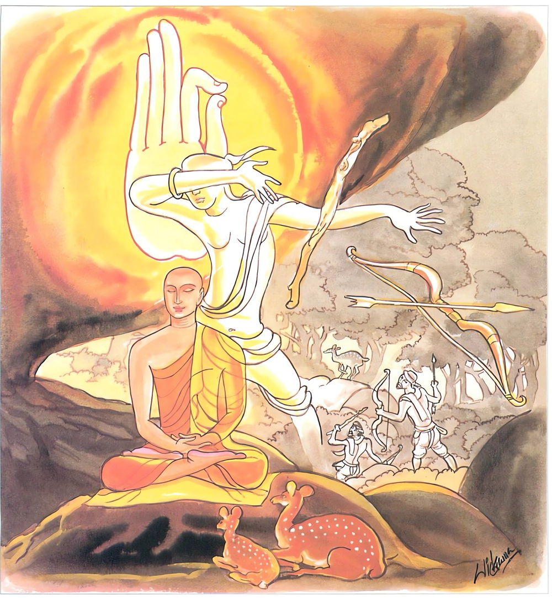

26-22 රහත් නමකට තැළූ පවිටි මිනිසෙක්
මෙම කතාව ධම්මපද අටුවාවෙන් ද කියවන්න.
නිධාය දණ්ඩං භූතෙසු තසෙසු ථාවරෙසු ච
යො න හන්ති න ඝාතෙති තමහං බ්රූමි බ්රාහ්මණං.
යම් පුද්ගලයෙක් (තෘෂ්ණාසන්ත්රාසයෙන්) බිය සහිත වූ ද (තෘෂ්ණාසන්ත්රාස රහිත හෙයින්) බිය රහිත වූ ද සියලු ජනයන් විෂයයෙහි කායාදි දණ්ඩය බහා තබා තෙමේ (කිසිවකු නො නසා ද) කිසිවකු මෙරමා ලවාත් නො නස්වා ද, එබඳු ක්ෂීණාස්රවයා බ්රාහ්මණ යැ යී මම් කියමි.

එක්තරා මහණ කෙනෙක් බුදුරජුන් වෙතින් උගත් කමටහන් ඇතියෝ වන වැද එහි වඩා උත්සාහ කොට වැඩි දවස් නො යවා රහත් වූහ. ඉන් පසු තමන් ලත් ඒ රහත් ගුණය බුදුරජුන්ට සැලකරන්නට වනයෙන් නිකම මග බැස ආහ. ඒ අතර එක් ගමක වැසි ගැහැණියක් තම හිමියා සමග කලහ කොට හිමියා ගෙයි නැති වේලෙහි මවුපියන් වෙත යන්නට මග බැස එන්නී ඒ තෙරුන් දැක “මුන්වහන්සේ කැටුව යෙමි” යි තෙරුන් පසු පස ගියා ය. එහෙත් ස්ථවිරයන් වහන්සේ ඇය නො දුටහ. ඇයගේ හිමි ගෙට ආයේ බිරිය නො දැක මවු පියන් වෙත ගියා වනැ”යි සිතා තෙමේ ඇය සොයා ගියේ ය. අතර මග දී ඇය දැක “මෑට එකලා ව මේ මහවන මැද යන්නට නො හැකි ය, මෑ කවරක්හු නිසා යන්නී දැ”යි වටපිට බැලී ය. වටපිට බලත්, එ මග වඩිනා තෙරුන් දැක “මෑ ගෙණ නික්මුණේ මෙ තෙමේ ය”යි සිතා තෙරුන්ට තරවටු කෙළේ ය. එවිට ඒ ස්ත්රිය “මේ පින්වතුන් වහන්සේ මා නො දුටහ, මා උන්වහන්සේ පසුපස එන බව උන්වහන්සේ නො දත්හ, මා හා කිසිවක් කතා නො කළහ, එහෙයින් උන්වහන්සේට ඇණුම් බැණුම් නො කළ යුතු ය”යි කිවූ ය. “කමෙක් ද, තී තමන් ඩැහැගෙණ යන්නහු ගැණ කියා ද, තිගේ ඔය බොරු බස් මම නො පිළිගණිමි, තිට කළ යුත්ත මූට කරමි”යි ඒ මෝඩ මිනිසා බිරිය කෙරෙහි උපන් ක්රෝධයෙන් ගැසි ගැසී මුගුරක් ගෙණ එයින් තෙරුන්ට තලා බිරිය ගෙණ පෙරළා ගියේ ය.
තෙරුන්ගේ සිරුර හැම තැන ලේ කැටි වී ඉල්පී සිටියේ ය. උන්වහන්සේ විහාරයට ගියහ. භික්ෂූන් වහන්සේලා උන්වහන්සේගේ සිරුර පිරිමදින්නාහු සිරුරෙහි ඉල්පී සිටි තැන් දැක “සිරුර තැන තැන ඉල්පී ගොස් ඇත, ගඩු හටගත්තා සේ පෙණේ, මෙසේ වූයේ කුමක් නිසා දැ?”යි ඇසූහ. උන්වහන්සේ තමන්ට මගදී වූ ඒ ගැහැට ඔවුනට කීහ. එවිට භික්ෂූන් වහන්සේලා “ඇවැත්නි! ඒ පවිටු මිනිසා මෙසේ පහර දෙන විට ඔබවහන්සේ ඔහුට කුමක් කීවහු ද: කිම, ඔහු කෙරෙහි ක්රෝධයෙක් නො උපන්නේ දැ?”යි ඇසූහ. උන්වහන්සේ “ඇවැත්නි! ඒ පව්කාරයා කෙරෙහි මට බින්දුමාත්ර වූත් ක්රෝධයෙක් නො ද උපනැ”යි කී විට භික්ෂූහු ඒ වේලෙහි ම බුදුරජුන් වෙත ගොස් එ පුවත සැලකොට “ස්වාමීනි! මේ මහණ, තමන්ගේ ඇඟ පත නිල්වන් ව ඇඟපත පැළී යන තුරු ම පහර දුන්නහු කෙරෙහි මා සිත් තුළ ක්රෝධයෙක් නො උපනැ යි බොරු කියා රහත් වූ සැටියක් පෙන්වන්නේ ය”යි සැල කළහ. බුදුරජානන් වහන්සේ ඒ භික්ෂූන්ගේ කතාව අසා “මහණෙනි! රහත්හු නම් බහා තැබූ දඬුමුගුරු ඇතියේ ය, බොරු නො කියන්නෝ ය, ඔවුහු තමන් තළා පෙළා ගැහැට කරන්නවුන් කෙරෙහි කිසිදාක ක්රෝධ නො කරන්නෝ ය”යි වදාර මේ ධර්මදේශනාව කළ සේක.
නිධාය දණ්ඩං තසු භුතෙසෙසු ථාවරෙසු ච,
යො න හන්ති න ඝාතෙති තමහං බ්රෑමි බ්රාහ්මණන්ති.
බිය සහිත වූ ද බිය රහිත වූ ද සත්ත්වයන් කෙරෙහි කායදණ්ඩය බහා තබා යමෙක් කිසිවකු නො නසා ද, නො නස්වා ද ඔහු, මම බමුණු යි කියමි.
නිධාය දණ්ඩං භූතෙසු තසෙසු ථාවරෙසු ච = බිය සහිත වූ ද බිය රහිත වූ ද සත්ත්වයන් කෙරෙහි දඬු මුගුරු බහා තබා.
යො න හන්ති න ඝාතෙති තං අහං බ්රෑමි බ්රාහ්මණං = යමෙක් තෙමේ කිසිවකු නො නසා ද (මෙරමා ලවා) නො නස්වා ද ඔහු, මම බමුණු යි කියමි.
මෙහි ‘දණ්ඩ’ නම්: දඬු මුගුරු කඩු කිරිච්චි ආදිය ය. “අද්ධ දණ්ඩකෙහිපි තාළෙන්ති” යනාදී තන්හි සේ ය. “කාය දුච්චරිතං කායදණ්ඩො, වචීදුච්චරිතං වචීදණ්ඩො, මනො දුච්චරිතං මනොදණ්ඩො” යනාදී තන්හි කායාදිදුච්චරිතයෙහි ආයේ ය. සමහර තැනෙක රජුන් විසින් පණවනු ලබන වධහිංසා ද දණ්ඩ යි කියනු ලැබේ.
‘භූතෙසු’ ‘සතත්වයන් කෙරෙහි, යන අරුත්. ‘භූත’ ශබ්දය “භූතස්මිං පාචිත්තියං” යනාදී තන්හි විද්යමානයෙහි ද, “භූත මිදන්ති භික්ඛවෙ සමනුපස්සථ” යනාදී තන්හි ස්කන්ධපංචකයෙහි ද, “චත්තාරො ඛො භික්ඛු මහාභූතා හෙතූති” යනාදී තන්හි පෘථීවීධාත්වාදියෙහි ද, “යො ච කාලඝ සො භූතො” යනාදී තන්හි ක්ෂීණාස්රවයා කෙරෙහි ද, “සබ්බෙව නික්ඛිපිස්සන්ති භූතා ලොකෙ සමුස්සයං” යනාදී තන්හි සකල සත්ත්වයන් කෙරෙහි ද, “භූතගාමපාතව්යතාය පාචිත්තියං” යනාදී තන්හි චාතුර්මහාරාජිකයන්ගේ යට පෙදෙස් හි වූ සත්ත්වයන් කෙරෙහි ද, “යානීධ භූතානි සමාගතානි” යනාදී තන්හි අමනුෂ්යයන් කෙරෙහි ද පවත්නේ, මෙහි සකලසත්ත්වයන් කෙරෙහි නැගී සිටියේ ය.
තසෙසු, ථාවරෙසු, යන දෙ පදය ‘භූතෙසු’ යනු වෙසෙසා සිටියේ ය. තෘෂ්ණායෙන් තැති ගන්නේ ‘තස’ නම් වෙත්. තෘෂ්ණා සහිත වූ භය සහිත වූවනට මේ නමෙකි. “තත්ථ තසන්තිති = තසා, සතණ්හානං සහයානං එතං අධිවචනං” යනු අටුවා. මොවුනතුරෙහි දීඝ - මහන්ත - මජ්ඣිම - රස්සක - අණුක - ථූල - දිට්ඨ - අදිට්ඨ - දූර - අවිදූර - සම්භවෙසී යනු විසින් හඳුන්වන සත්ත්වයෝ වෙත්.
එහි දීර්ඝ සත්ත්වයෝ නම්: බඹ සිය ගණන් දික් වූ සිරුරු ඇති නාග මච්ඡ ගොධාදීහු ය. මහාසතත්වයෝ නම්, දියෙහි හැසිරෙණ මත්ස්යාදීහු, ගොඩ හැසිරෙණ හස්තිනාගාදීහු, අමනුෂ්යයන් අතුරෙහි අසුරාදීහු ය. රාහු අසුරිඳුගේ ශරීරය උඩින් යොදුන් සාරදහස් අට සියයෙකි. දෙ බාහු ව යොදුන් එක් දහස් දෙසියයෙකි. බැම අතර හා ඇඟිලි අතර පණස් පණස් යොදුනෙකි. එක් අත්ලක් යොදුන් දෙසියයෙකි. මධ්යමසත්ත්වයෝ නම්, අශ්ව ගම මහීෂාදීහු ය. හ්රස්වක සත්ත්වයෝ නම්, ඒ ඒ සත්ත්වජාතීන් අතුරෙහි දීර්ඝ සත්ත්වයන්ටත් මධ්යමසත්ත්වයන්ටත් පහත්ව සිටි වාමනකාදීහු ය. අණුකසත්ත්වයෝ නම්, මසැසට ගොදුරු නො වන දිවැසට පමණක් පෙණෙන සත්ත්ව ජාතීහු ය. ස්ථූලසත්ත්වයෝ නම්, පිරිමඬුලු වූ සිරුරු ඇති මච්ඡකච්ඡපසිප්පිසම්බුකාදීහු ය. දිට්ඨසත්ත්වයෝ නම්, තම ඇසට පෙණෙන්නෝ ය. අදිට්ඨසත්ත්වයෝ නම්, පරසමුද්ද පරසෙල පරචක්කවාලයන්හි වූවෝ ය. දූරසත්ත්වයෝ නම්, අන්හු සිරුරෙහි වසන්නෝ ය. අවිදුරසත්ත්වයෝ නම්, තම සිරුරෙහි වසන්නෝ ය. සම්භවෙසීසත්ත්වයෝ නම්, පහ නො කළ භව සංයෝජන ඇති බැවින් මතු භවයෙහි ඉපැත්ම සොයන ශෛක්ෂ්යපෘථග්ජනයෝ ය. තවද අණ්ඩං - ජලාබුජයෝ ද සංසෙදජ - ඔපපාතිකයෝ ද ප්රථමචිත්තක්ෂණයෙහි දී සම්භවෙසීහු ය. උපන් ඉරියව්වෙන් සිටින්නෝ ද සම්භවෙසීහු ය.
‘ථාවර’ නම්: ප්රහීණ කළ තෘෂ්ණාභය ඇති රහතුන් වහන්සේ ය. ස්ථිතිප්රාප්ත බැවින් කොතැනකත් කිසිවකිනුත් නො සැලී ස්ථීරව පිහිටා ගත්තෝ ය. යමෙක් මෙසේ තෘෂ්ණාභය සහිත වූත් සියලු සතුන් කෙරෙහි පහ වූ ක්රෝධ ඇතියේ එහෙයින් ම අත් පා දඬු මුගුරු ආදියෙන් පහරදීම් දුරු කොට සැහැසි බවෙන් දුරුව සිටියේ, තෙමේ කිසි ද කරුණක් නිසා කිසි ද සතකු නො නසා ද, අන්හු ලවා නො නස්වා ද ඔහු බ්රාහ්මණ නම් වන්නේ ය.
ධර්මදේශනාවගේ අවසානයෙහි බොහෝ දෙන සෝවන් ඵලාදියට පැමිණියාහු ය.
අන්යතර භික්ෂු වස්තුව නිමි.